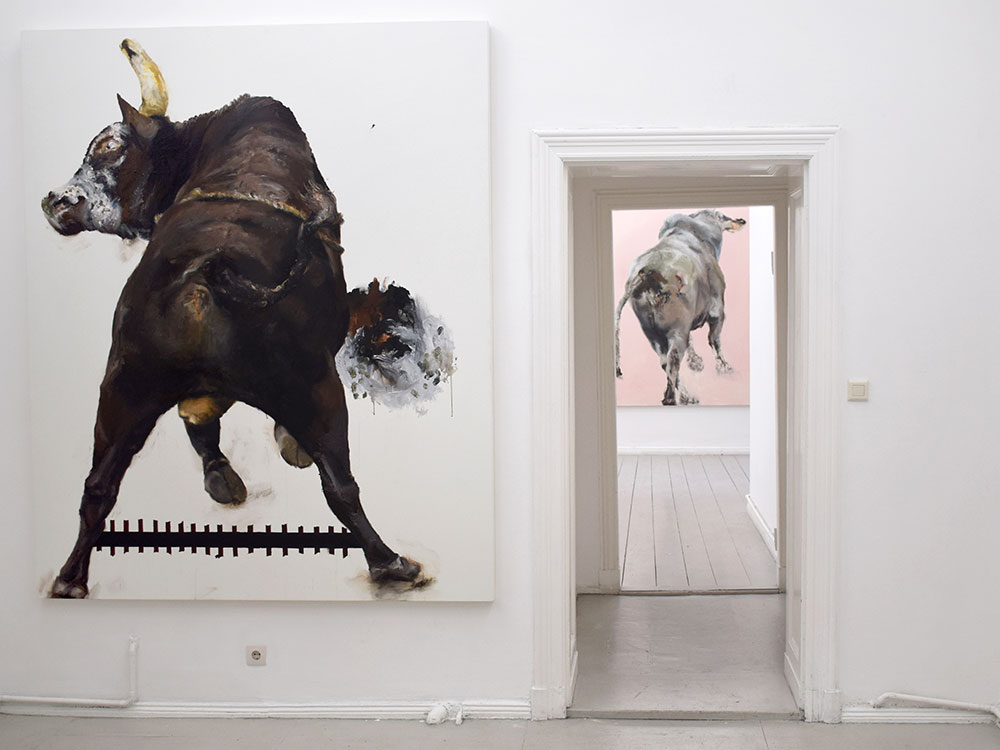
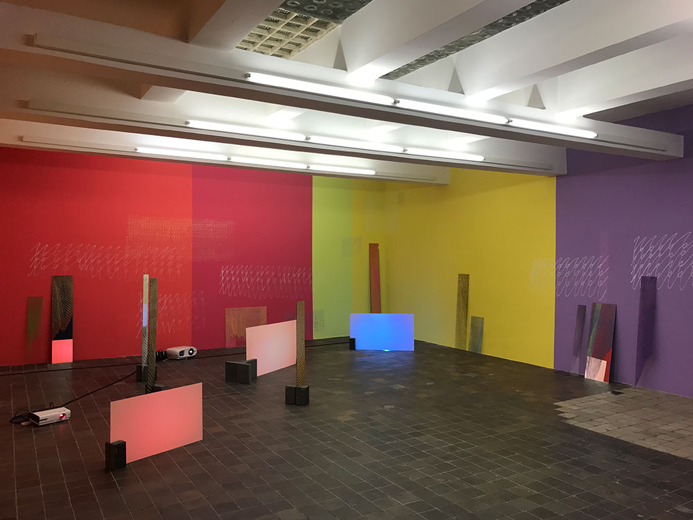

B←
------------------------------------------------------------------------
→LA
PARTNER SPACES
ARLA + A TRANS + Studio Baustelle
Acceptable Risk LA is a Los Angeles-based artist collective established by former members of the FORUM mentorship program at the Torrance Art Museum. This cohort of artists, curators, and writers is focused on staging exhibitions and activities that challenge current ideas about art practices, collective models for art world engagement, and the contemporary art world at large. ARLA’s projects thus far have been nomadic, spread throughout LA and mirroring the sprawl of the city, but ARLA plans to eventually establish a centralized space while continuing to produce pop-up events.
A trans is a conceptual laboratory for creative people and a platform for communication about contemporary art, architecture, urbanism and related culture with the focus on the city, space and architecture. With determination in the search for allies and like minded individuals, architect and curator Isolde Nagel designes a program for those who value artistic architectonic visions and attentiveness to social questions
Adjunct Positions + Horse & Pony
ALSO + uqbar
BIG PICTURES + Blake & Vargas
CACtTUS + COPYRIGHTBerlin
Dalton Warehouse + L'oiseau présente & Botschaft
DURDEN AND RAY + Axel Obiger
DXIX + Scharaun
ESXLA + SCOTTY
JAUS + panke.gallery
LAVA Projects + InteriorDAsein
Mandujano Cell + nationalmuseum
Monte Vista Projects + kronenboden
Nothing Special + SomoS Art House
Odd Ark + Cashmere Radio + Changing Room
PØST + LAGEEGAL
river + Milchhof Pavillon
SADE LA + ACUD MACHT NEU
Tiger Strikes Asteroid + HilbertRaum
TRACK 16 + rosalux
SPACES — LA
ARLA
Adjunct Positions
ALSO
Big Pictures
CACtTUS
Dalton Warehouse
Durden and Ray
DXIX
ESXLA
JAUS
LAVA Projects
Mandujano Cell
Monte Vista Projects
Nothing Special
Odd Ark
PØST
river
SADE LA
Tiger Strikes Asteroid
TRACK 16
SPACES — BERLIN
ACUD MACHT NEU
A TRANS
Axel Obiger
Blake & Vargas
Cashmere Radio
Changing Room
COPYRIGHTberlin
HilbertRaum
Horse & Pony
InteriorDAsein
kronenboden
LAGEEGAL
L’oiseau présente & Botschaft
nationalmuseum
panke.gallery
Pavillon am Milchhof
q space
rosalux
Scharaun
SomoS Art House
SCOTTY
uqbar